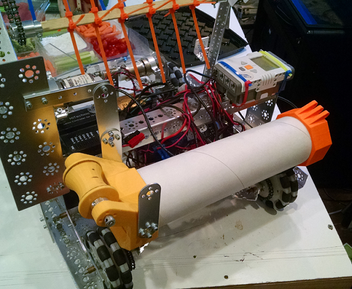
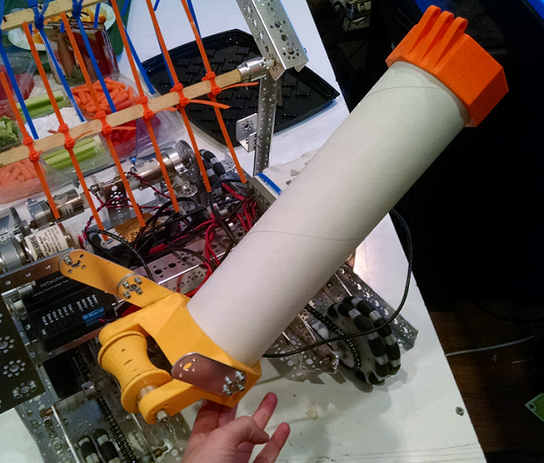
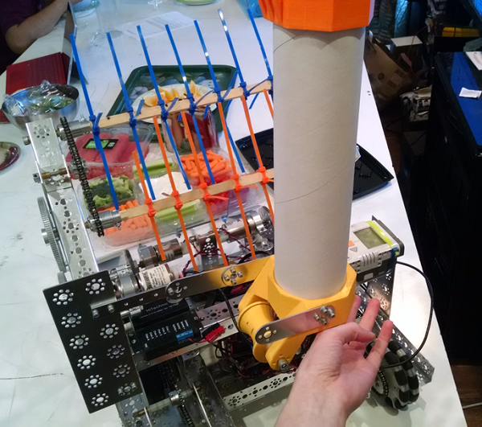

For a long time now, one of our problems has been to figure out how to mount the tubes that will function as the lift system onto the robot, and where to mount them. Today, we tackled this question with the highest possible efficiency. We used a small piece of tube that was serving as an example to get an idea of how big the mechanism should be. After trying a few things, we decided to place the tubes, which will be three in number, on top of each other horizontally on the very back of the robot. They will then fold upward using some magical method not yet decided. However, another problem was encountered during these ventures.
At some previous meeting far far away, we cut out a socket in the back of our robot so that rolling goals could slide into it and be easily moved. The position that we chose for the tubes was going to be right on top of this socket. So, a new problem, how to get the tubes out of the way of the goals, had arisen. If they were to rotate up, then somehow they would have to get out of the way by themselves. So, the ingenious idea was shared that we could set the tubes up so that their base was to the left of the socket, so that when they were straight up, they would be completely out of the way. And so, another problem was solved thanks to our ingenuity and problem-solving skills.
It took many tries to find a correct position, but we did succeed. Now, the magical motor that will move everything must be discovered. It is shown below.
  
Related Articles: